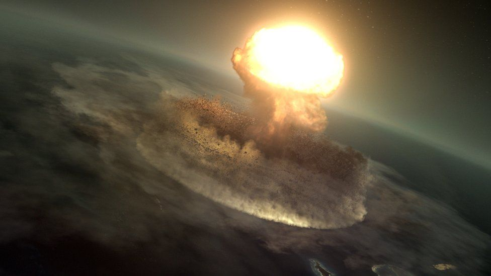
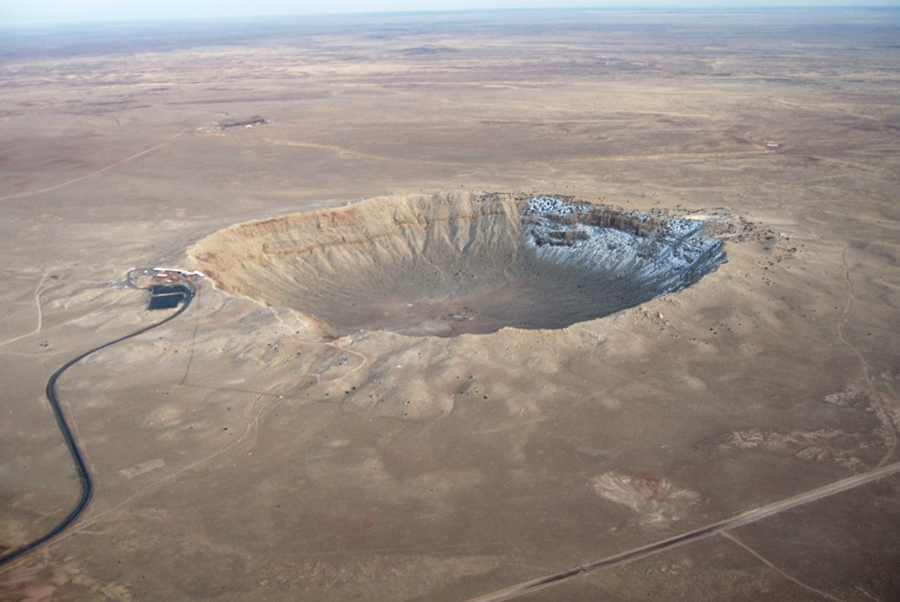

Introduction
So we've learned that there are lots of theories about the how the Dinosaurs were wiped out. For the theories click here.
What could have killed such huge creatures that lived for millions and millions of years?
One theory is that some scientists believe that a HUGE asteroid crashed into earth, setting off a
series of events that sadly wiped out the dinosaurs. This happened over sixty five million years ago!!!
What is an asteroid then?
So first of all, you are thinking, what is an asteroid? Let me tell you!
Asteroids are actually minor planets which can be classified either as a planet or as a
comet. These are generally in the direct orbit around the Sun, also known as the inner solar system.
The larger forms of asteroids are also known as planetoids. The name asteroid literally means "star-like".
About 75% of asteroids are designated as carbon based.
253 Mathilde, a C-type asteroid measuring about 50 km (30 mi) across, covered in craters half that size
Photo taken in 1997 by the NEAR Shoemaker probe.
There are lots of asteroids in our solar system. Most of them live in the main asteroid belt
region between the orbits of Mars and Jupiter.
So, where did asteroids come from?
Asteroids are left over from the formation of our solar system. Our solar system began about 4.6 billion years ago when a big cloud of gas and dust collapsed. When this happened, most of the material fell to the center of the cloud and formed
the sun.
Some of the condensing dust in the cloud became planets. The objects in the asteroid belt never had the chance to be incorporated into planets. They are leftovers from that time long ago when planets formed.
So how did the asteroid kill the Dinosaurs?!!!
Some scientists say the 10km-wide asteroid that smashed into Earth and created the Chicxulub crater was the chief cause, with the strike sending up vast quantities of material that blocked the sun, triggering a prolonged, cold period that
caused devastation.
This impact made a huge explosion and a crater about 180 km
(roughly 110 miles) across. Debris from the explosion was thrown into the
atmosphere, severely altering the climate, and leading to the extinction of
roughly 3/4 of species that existed at that time, including the dinosaurs.
Many asteroids of this type are now known; their orbits pass through the
inner solar system and cross Earth's orbit.
Some of these could potentially hit Earth in the future. Most,
but not all are smaller than the one that hit us 65 million years ago.
The poor Dinosaurs were surrounded by a tsunami, global wildfires,
and an immediate greenhouse effect followed by a prolonged period of cooler temperatures. This also affected plant growth. It must have been a terrible time for them. While a
lot of information has been discovered, researchers and scientists
are still trying to piece it all together.

An artist's impression of the impact.

Chicxulub Crater, Gulf of Mexico
Sourced from NASA, National Geographic and Wikipedia